Part 8 · Traffic Control for Railroad and Light Rail Transit Grade Crossings · Chapter 8E
Pathway and Sidewalk Grade Crossings
Traffic control specific to pedestrians, bicyclists, and other pathway/sidewalk users crossing rail or LRT tracks — signs and markings sized for non-motorized users, stop lines and detectable warnings, Crossbuck Assemblies, channelizing devices (swing gates, fencing), and active devices (flashing-light signals and automatic pedestrian gates).
8E.01Purpose
- 01Traffic control for pathway and sidewalk grade crossings includes all signs, signals, markings, other warning devices, and their supports at pathway and sidewalk grade crossings and along pathway and sidewalk approaches to grade crossings. Its function is to promote safety and provide effective operation of both rail and pathway or sidewalk traffic at these crossings.
- 02Other physical treatments described in this Chapter that apply to pathways and sidewalks at grade crossings — such as detectable warnings, swing gates, and fencing — provide increased safety for pathway and sidewalk users.
- 03Crosswalk markings at intersections where pedestrians cross LRT tracks in mixed-use alignments are covered by Chapter 3C rather than by this Chapter.
- 04Figure 8E-1 illustrates the difference between a pathway grade crossing and a sidewalk grade crossing. A pathway is frequently placed in its own right-of-way independent of any roadway; if built parallel to a roadway, it is physically separated by open space or a barrier such that roadway grade crossing devices do not exert influence over or provide adequate warning to pathway users. A sidewalk runs parallel to a roadway within the highway right-of-way, close enough to the traveled way that the roadway grade crossing's traffic control devices can frequently exert influence over or provide adequate warning to sidewalk users. Pathways are typically used by both pedestrians and bicyclists, whereas sidewalks are typically used only by pedestrians.
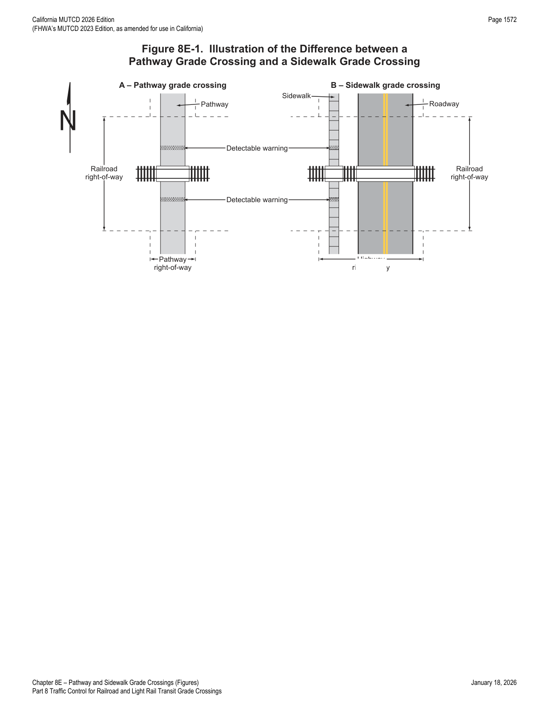
8E.02Use of Standard Devices, Systems, and Practices
- 01The pathway or sidewalk user's ability to detect the presence of approaching rail traffic should be considered in determining the type and placement of traffic control devices at pathway or sidewalk grade crossings.
- 02The traffic control devices, including the appropriate traffic control system, and other physical treatments at a pathway or sidewalk grade crossing should be evaluated by a Diagnostic Team that includes the agency with jurisdiction over the pathway or sidewalk.
- 03At skewed grade crossings, the adjustment, re-alignment, or relocation of existing sidewalk grade crossings should be considered when determining the placement of traffic control devices for roadway users.
- 04The safety of pathway and sidewalk users is enhanced when pathways and sidewalks are designed so they do not cross the tracks at a narrow angle — wheelchair casters and bicycle wheels could fall into and be constrained by the flangeway gap at a skewed crossing. The flangeway gap is typically 2.5 inches wide at LRT grade crossings and 3 inches wide at railroad grade crossings.
- 05It is desirable that pathways and sidewalks maintain a relatively consistent horizontal alignment and profile from the nearest rail to the detectable warning (if present) or to the stop line (if present) on each approach. Providing a pedestrian refuge area in advance of the stop line or detectable warning surface, so pedestrians have a place to wait while rail traffic approaches and occupies the crossing, can benefit pedestrian safety.
- 06When designing new sidewalk grade crossings, it is desirable to place the sidewalk outside the area occupied by grade crossing traffic control devices for vehicular traffic (see Figure 8E-2), including ensuring that counterweights and support arms for vehicular automatic gates do not obstruct the sidewalk when the gate is fully lowered.
- 07Additional information regarding the design of pathways and sidewalks is contained in the U.S. Department of Justice 2010 ADA Standards for Accessible Design (28 CFR 35 and 36, Americans with Disabilities Act of 1990).
8E.03Pathway and Sidewalk Grade Crossing Signs and Markings
- 01Pathway and sidewalk grade crossing signs shall be standard in shape, legend, and color.
- 02The minimum sizes of sidewalk grade crossing signs intended to be viewed only by sidewalk users, and of pathway grade crossing signs, shall be as shown in the shared-use path column of Table 9A-1.
- 03No portion of a traffic control device or its support should protrude into the pathway or sidewalk grade crossing. Sidewalk and pathway grade crossing traffic control devices should be located so that all physical features, including support hardware, conform to clearance requirements provided by the railroad company and/or transit agency and CPUC (if applicable).
- 04The minimum mounting height for post-mounted signs adjacent to pathways and sidewalks should be 4 feet, measured vertically from the bottom of the sign to the elevation of the near edge of the pathway or sidewalk surface (see Figure 9A-1).
- 05If overhead traffic control devices are placed above pathways, the clearance from the bottom of the device to the pathway surface directly under it should be at least 8 feet.
- 06If overhead traffic control devices are placed above pathways used by equestrians, the clearance should be at least 10 feet.
- 07If overhead traffic control devices are placed above sidewalks, the clearance from the bottom of the device to the sidewalk surface directly under it shall be at least 7 feet.
- 08Traffic control devices mounted adjacent to pathways at a height of less than 8 feet (measured vertically from the bottom of the device to the near edge of the pathway surface) should have a minimum lateral offset of 2 feet from the near edge of the device to the near edge of the pathway (see Figure 9A-1).
- 09If pathway users include those who travel faster than pedestrians, such as bicyclists or skaters, warning signs should be installed in advance of the pathway grade crossing (see Figure 8E-3).
- 10The Skewed Crossing (W10-12) sign (see Section 8B.22) may be used at a skewed pathway or sidewalk grade crossing to warn users that the tracks are not perpendicular to the pathway or sidewalk.
- 11The LOOK (R15-8) sign (see Figure 8B-1) may be used at a pathway or sidewalk grade crossing to inform users to look in both directions prior to crossing the track(s).
- 12If a LOOK (R15-8) sign is used, it should be mounted on a separate post that is farther from the pathway or sidewalk than the Crossbuck sign or Crossbuck Assembly.
- 13The LOOK (R15-8) sign is used to provide additional warning for pedestrians and bicyclists.
8E.04Stop Lines, Edge Lines, and Detectable Warnings
- 01A stop line should be provided at a pathway grade crossing if the surface where the marking is to be applied is capable of retaining the marking.
- 02A stop line may be provided at a sidewalk grade crossing if the surface is capable of retaining the marking.
- 02aAt a sidewalk grade crossing, a detectable warning is typically used without a stop line.
- 03If used at pathway or sidewalk grade crossings, the stop line should be a transverse line extending across the full width of the pathway or sidewalk at the point where a user is to stop. If no detectable warning is provided, the stop line should be placed at least 2 feet in advance of the automatic gate, counterweight, flashing-light signals, or Crossbuck Assembly (whichever is present), and at least 12 feet from the nearest rail.
- 04Edge lines (see Section 3B.09) to delineate the designated user route may be used on the approach to and across the tracks at a pathway, sidewalk, or station crossing if the surface is capable of retaining the marking.
- 05Edge line delineation can be beneficial where the distance across the tracks is long — commonly because of a skewed grade crossing or multiple tracks — or where the pathway or sidewalk surface is immediately adjacent to a traveled way.
- 06Information regarding the design of detectable warning surfaces is contained in the U.S. Department of Justice 2010 ADA Standards for Accessible Design (28 CFR 35 and 36, Americans with Disabilities Act of 1990).
- 07Detectable warnings (see Chapter 3C) shall be used at pathway grade crossings where pedestrian travel is permitted and at sidewalk grade crossings, and shall extend across the full width of the pathway or sidewalk.
- 08The dimension of the detectable warning in the direction of pedestrian travel should be at least 2 feet.
- 09Detectable warnings should be placed immediately beyond the pathway or sidewalk stop line (if present) or incorporated into the stop line. The downstream edge of the detectable warning should be located at least 2 feet upstream from the automatic gate, counterweight, flashing-light signals, or Crossbuck Assembly (whichever is present, on the side further from the tracks), and at least 12 feet from the nearest rail (see Figures 8E-2 and 8E-3).
- 10If the distance between the nearest rail of two adjacent tracks at a sidewalk or pathway grade crossing is 30 feet or more, additional detectable warnings should be used to designate the limits of the pedestrian refuge area (see Figure 8E-4).
- 11At pathway-LRT and sidewalk-LRT grade crossings, the downstream edge of the detectable warning may be located less than 12 feet from the nearest rail.
- 12The downstream edge of the detectable warning at pathway-LRT and sidewalk-LRT grade crossings should be located at least 2 feet upstream from the automatic gate, counterweight, flashing-light signals, or Crossbuck Assembly (whichever is present), at least 6 feet from the nearest rail measured perpendicular to the rail, and in accordance with the requirements of the railroad company and/or transit agency and CPUC (if applicable).
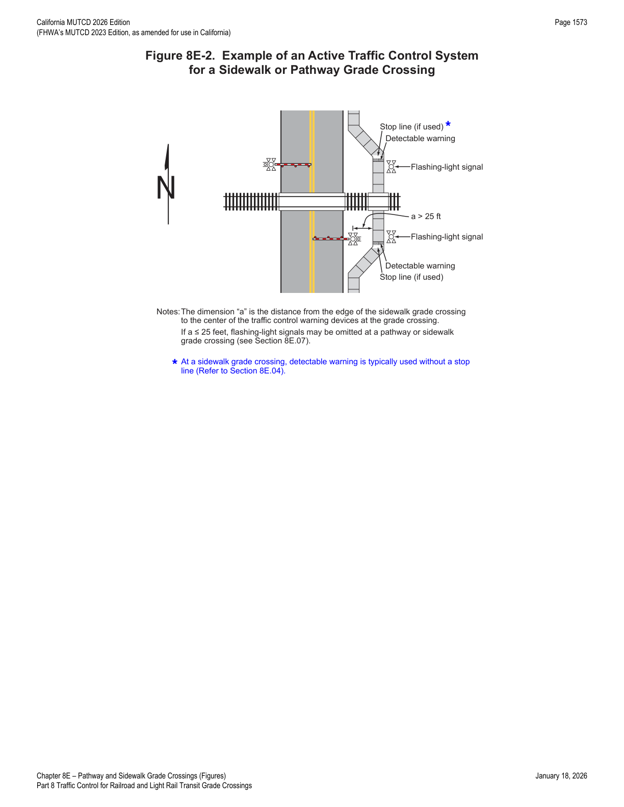
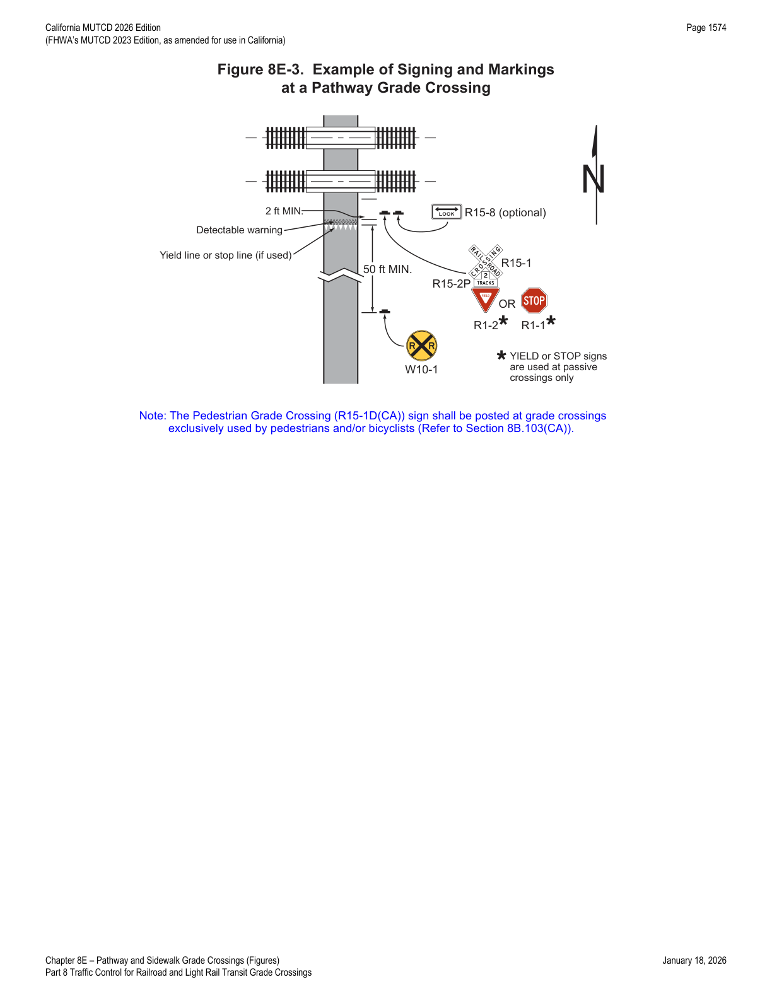
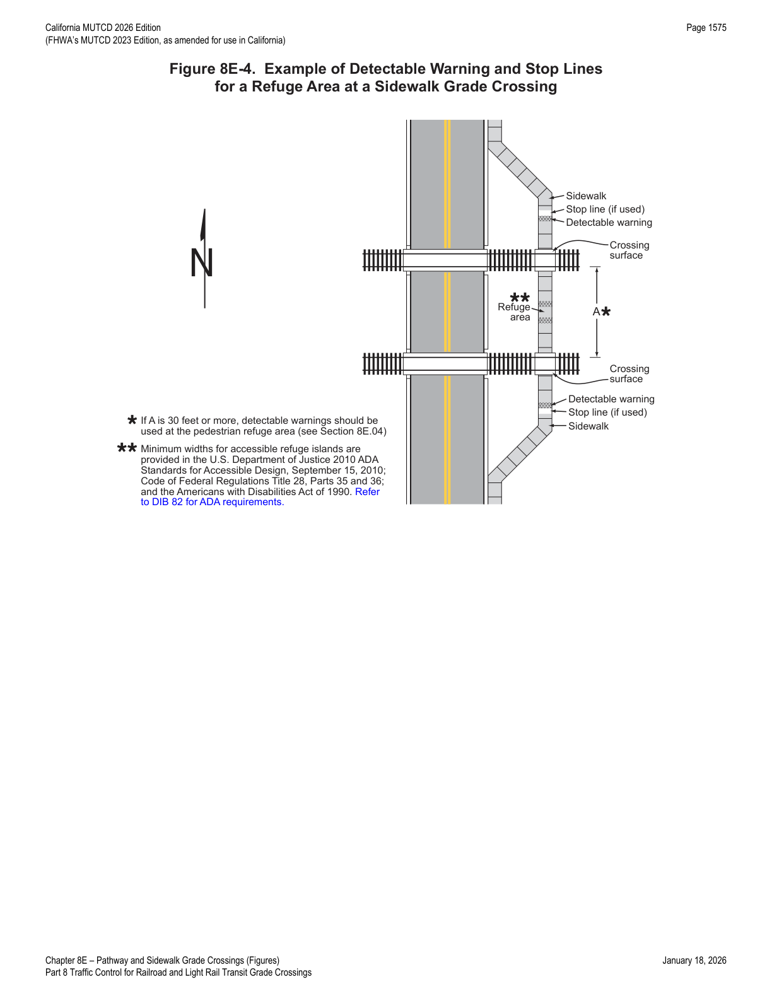
8E.05Passive Traffic Control Devices — Crossbuck Assemblies
- 01Where the nearest edge of a passive pathway or sidewalk grade crossing is located more than 25 feet from the center of the nearest traffic control warning device at the grade crossing, a Crossbuck Assembly (see Figure 8E-5) shall be installed on each approach. The distance is measured perpendicular to the traveled way from the center of the Crossbuck Assembly's support post (at a passive grade crossing) or the center of the active warning device's mast (at an active grade crossing) to the nearest edge of the pathway or sidewalk surface where it crosses the track(s) (see Figure 8E-2).
- 02A Crossbuck Assembly may be installed on the approaches to a pathway or sidewalk grade crossing where the nearest edge of the pathway or sidewalk is 25 feet or less from the center of the nearest traffic control warning device.
- 03The Crossbuck Assembly may be omitted at station crossings.
- 04The retroreflective strip on the back of the support may be omitted on the Crossbuck support at a pathway or sidewalk grade crossing.
- 05The minimum height, measured vertically from the bottom of the YIELD or STOP sign to the elevation of the near edge of the pathway or sidewalk, of Crossbuck Assemblies installed on pathways or sidewalks shall be 4 feet where the lateral offset to the nearest edge of the sign is 2 feet or more, and shall be 7 feet where the lateral offset is less than 2 feet (see Figure 8E-5).
- 06The minimum lateral offset, measured horizontally from the nearest edge of the pathway or sidewalk to the nearest edge of the Crossbuck Assembly signs, shall be 0 feet for sidewalks and 2 feet for pathways.
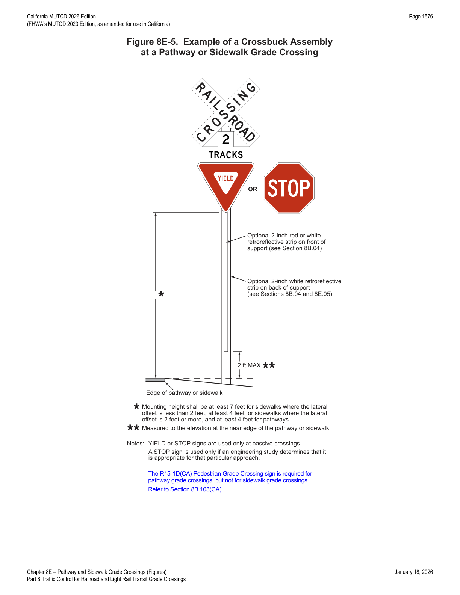
8E.06Channelizing Devices used with Sidewalk and Pathway Traffic Control Devices
- 01The pathway or sidewalk user's ability to detect the presence of approaching rail traffic needs to be considered in determining the type and placement of channelizing devices such as swing gates, fencing, and pedestrian barriers.
- 02Where automatic gates and swing gates are used, it is desirable to design the pathway or sidewalk in a manner that channelizes or directs users to the entrance to and exit from the grade crossing.
- 02aWhere automatic pedestrian gates are installed, swing gates are typically installed along an emergency escape route in conjunction with each automatic pedestrian gate.
- 03Swing gates (see Figures 8E-6, 8E-9, and 8E-10) are designed to open away from the track(s) so pathway or sidewalk users can quickly push them open when moving away from the track(s), and to automatically return to the closed position after each use.
- 04It is important to use retroreflective material, appropriate object markers (see Section 9C.09), and/or signs on swing gates, maze fencing, or pedestrian barriers at pathway or sidewalk grade crossings; illumination of such areas can also be beneficial.
- 05When used in conjunction with automatic gates, swing gates are typically equipped with a latching device designed to be opened only from the track side of the gate. Push bars, kick plates, or similar devices are also appropriate.
- 06Latching devices used on swing gates need to be designed so they are operable by all users of the pathway or sidewalk.
- 07A swing gate should be equipped with a PUSH TO EXIT (I13-2) sign on the track side and a DO NOT ENTER (R5-1) sign on the side facing away from the tracks (see Figure 8E-10).
- 07aWhere swing gates are placed along an emergency escape route near a roadway, signs mounted on the swing gate are typically oriented and sized to be visible to pedestrians rather than motorists.
- 08The U.S. Department of Justice 2010 ADA Standards for Accessible Design (28 CFR 35 and 36) contains information regarding the design of swing gates and related hardware.
- 09Where fencing (see Figures 8E-6 and 8E-9) is installed to direct pathway or sidewalk users to the grade crossing, it is desirable that this fencing connect to any continuous existing or new fencing or channelization installed parallel to the track(s), to discourage pedestrians from circumventing the crossing.
- 10Pedestrian barriers or fencing, sometimes called "maze fencing," direct pathway or sidewalk users to face approaching rail traffic before entering the trackway.
- 11Where used, maze fencing or pedestrian barriers need to be designed to permit passage of wheelchairs and power-assisted mobility devices, and — if bicycles are permitted — passage of dismounted bicyclists with tandem bicycles, cargo bicycles, or bicycles with trailers.
8E.07Active Traffic Control Systems
- 01Except as provided in Paragraph 05, at pathway-LRT and sidewalk-LRT grade crossings where LRT operating speeds on a semi-exclusive alignment exceed 25 mph, active traffic control systems shall be used.
- 02Except as provided in Paragraph 05, at pathway-LRT and sidewalk-LRT grade crossings where LRT operating speeds on a semi-exclusive alignment exceed 35 mph, active traffic control systems, including automatic gates, shall be used. Refer to CPUC General Order 143.
- 03If used at a pathway or sidewalk grade crossing, an active traffic control system (see Section 8D.01) shall include flashing-light signals (see Figure 8E-7) on each approach to the crossing.
- 04If used at a pathway or sidewalk grade crossing, an active traffic control system shall include an audible device, such as a bell, operated in conjunction with the flashing-light signals.
- 05Flashing-light signals, bells, and other audible warning devices may be omitted at pathway or sidewalk grade crossings located within 25 feet of an active warning device at a grade crossing already equipped with those devices.
- 06Additional pairs of flashing-light signals, bells, or other audible warning devices may be installed on the active traffic control devices at a grade crossing for pathway or sidewalk users approaching from the back side of those devices.
- 07Where railroad or LRT tracks in a semi-exclusive alignment are parallel and immediately adjacent to a roadway, and adequate space exists, a pedestrian refuge area or island should be provided between the tracks and the roadway so pedestrians can stand clear of the tracks while waiting to cross the roadway and stand clear of the roadway while waiting to cross the tracks. If provided at a signalized roadway crossing, additional pedestrian features (see Chapter 4I) — such as signal heads, signing, and detectors — should be installed in the refuge area or on the island.
Judgment call: the source shows a stacked "Guidance:" / "Standard:" label immediately before Paragraph 04 with the text reading "should shall include" — a redline artifact (Option/Guidance "should" struck, replaced by "shall"). This chapter follows the final Standard wording, "shall include," consistent with the mandatory audible-device requirement.
8E.08Active Traffic Control Devices — Signals
- 01Pedestrian signal heads are typically used at highway-highway intersections where pedestrians have an expectation that other roadway users will sometimes be legally required to yield to them. At grade crossings where rail traffic does not stop, pedestrians will not have the right-of-way yielded to them; therefore, pedestrian signal heads are not appropriate at a pathway or sidewalk grade crossing where rail traffic does not stop. Instead, horizontally-aligned, alternately-flashing red lights are the uniform active traffic control device for all such grade crossings, including pathway and sidewalk grade crossings.
- 02Except as provided in Paragraph 03, pedestrian signal heads as described in Chapter 4I (Upraised Hand and Walking Person symbols) shall not be used at a pathway or sidewalk grade crossing.
- 03Pedestrian signal heads may be used at a pathway or sidewalk grade crossing where LRT vehicle movement is controlled by a traffic control signal or by special LRT signals (see Section 8D.15).
- 04If used at a pathway or sidewalk grade crossing, flashing-light signals shall be aligned horizontally and the light units shall have a diameter of at least 12 inches. For 12-inch diameter light units, the light centers shall be spaced approximately 30 inches apart and, if used, the flashing light unit backgrounds shall be at least 24 inches in diameter.
- 04aRefer to FHWA's List of Known Errors for an error in the Paragraph 04 text. Refer to Section 1A.04 for more details.
- 05Each red signal unit in the flashing-light signal shall flash alternately. The number of flashes per minute for each lamp shall be 35 minimum and 65 maximum. Each lamp shall be illuminated for approximately the same length of time; the total time of illumination of each pair of lamps shall be the entire operating time.
- 06The minimum mounting height of the flashing-light signals shall be 4 feet, measured vertically from the bottom edge of the lights to the elevation of the near edge of the pathway or sidewalk surface.
- 07At station, pathway, or sidewalk grade crossings with multiple tracks, traffic control devices may be installed between the tracks in compliance with any railroad clearance requirements.
- 08The mounting height for flashing-light signals installed between the tracks at multiple-track crossings shall be a minimum of 1 foot, measured vertically from the bottom edge of the lights to the elevation of the near edge of the pathway surface.
- 09If a Diagnostic Team finds that a flashing-light signal with a Crossbuck sign and an audible device is still not resulting in appropriate pedestrian behavior, consideration should be given to also installing an automatic pedestrian gate (see Section 8E.09).
- 10Flashing-light signals (see Figure 8E-7) with a Crossbuck (R15-1) sign and an audible device should be installed along semi-exclusive LRT alignments at station, pathway, or sidewalk grade crossings where the Diagnostic Team has determined that sight distance is not sufficient for users to complete their crossing prior to the arrival of LRT traffic.
- 11If the Diagnostic Team determines that flashing-light signals with a Crossbuck sign and an audible device would not provide sufficient notice of approaching LRT traffic, consideration should be given to also installing an automatic pedestrian gate (see Section 8E.09) with appropriate channelization or fencing.
Judgment call: Paragraph 04 as printed reads "at least 4 12 inches" for diameter, "16 30 inches" for spacing, and "8 24 inches" for background diameter — a redline where the original 4-inch-lens generation of devices (8-inch background, 16-inch spacing) is being superseded by 12-inch lenses (24-inch background, 30-inch spacing). Figure 8E-7 itself carries both the new dimensions (24, 30, 12 inches) and a footnote path for legacy 4-inch installations (8-inch background, ~16-inch spacing "if 4-inch lights are used"). This chapter states the new 12-inch standard as the current Standard-level requirement and notes the legacy figures for context.
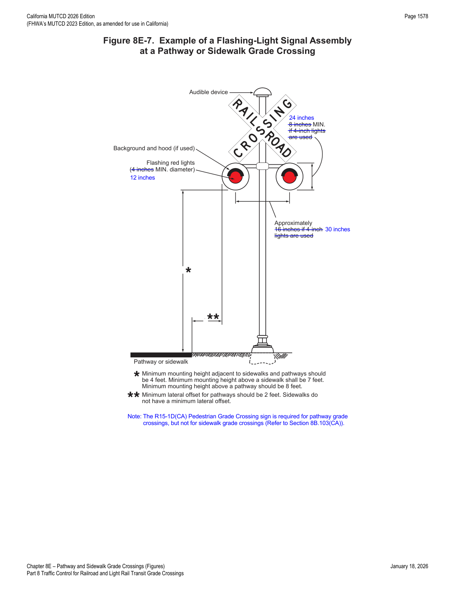
8E.09Active Traffic Control Devices — Automatic Pedestrian Gates
- 01aIf used at a pathway or sidewalk grade crossing, an automatic pedestrian gate typically includes an audible device such as a bell, a Crossbuck (R15-1) sign, flashing-light signals, and, if applicable, the Pedestrian Grade Crossing Sign (R15-1D(CA)). Refer to CPUC General Order 75, as amended.
- 02A pathway or sidewalk grade crossing across tracks where trains are permitted to travel at speeds of 80 mph or higher shall be equipped with a system of automatic pedestrian gates and an escape area with swing gates and fencing installed in the vicinity of the crossing to direct users to the crossing (see Figure 8E-6), unless the Diagnostic Team recommends and CPUC determines that other safety treatments would be more appropriate.
- 03Where automatic pedestrian gates are installed across a pathway or sidewalk, or where a sidewalk is located between the edge of a roadway and the support for an automatic gate arm extending across the sidewalk and into the roadway, an emergency escape route (see Figures 8E-9 and 8E-10) should be provided to allow pedestrians to egress away from the track area when the automatic pedestrian gates are activated.
- 04Except as provided in Paragraph 06, automatic pedestrian gate arms shall be provided with at least one red light, as shown in Figures 8E-6, 8E-8, 8E-9, 8E-11, and 8E-12. This light shall be continuously illuminated whenever the warning system is active.
- 05If any red lights in addition to the continuously-illuminated light required in Paragraph 04 are provided, they shall be installed in pairs and shall flash alternately in unison with the other flashing-light units at the crossing.
- 06The red light on an automatic pedestrian gate arm may be omitted if the pathway or sidewalk grade crossing is located within 25 feet of the traveled way at a highway-rail or highway-LRT grade crossing equipped with active warning devices (see Figure 8E-11).
- 07If used at a pathway or sidewalk grade crossing, the height of the automatic pedestrian gate arm when in the down position should be a minimum of 3 feet and a maximum of 4 feet above the pathway or sidewalk.
- 08If used, the gate configuration — which might combine automatic pedestrian gates and swing gates — should provide full-width coverage of the pathway or sidewalk on each approach to the crossing.
- 09Where a sidewalk is located between the edge of a roadway and the support for an automatic gate arm that extends across the sidewalk and into the roadway, the location, placement, and height prescribed for vehicular gates shall be used (see Section 8D.03).
- 10Except as provided in Paragraph 11, if a separate automatic pedestrian gate is used for a sidewalk at a highway-rail or highway-LRT grade crossing (instead of a supplemental or auxiliary gate arm on the same mechanism as the vehicular gate), a separate mechanism (see Figure 8E-11) should be provided so that a pedestrian manually raising the pedestrian gate arm has no effect on the vehicular gate.
- 11A supplemental or auxiliary pedestrian gate arm installed on the same mechanism as the vehicular gate may be used if the operating mechanism is designed to prevent the vehicular gate from being raised as a result of a pedestrian manually raising the pedestrian gate arm.
- 12A horizontal hanging bar (see Figure 8E-12) may be attached to an automatic pedestrian gate at a pathway or sidewalk grade crossing to inform pedestrians with vision disabilities that the gate is in the down position and to reduce the likelihood that pedestrians will violate a lowered crossing gate.
- 12aStriping of the horizontal hanging bar typically matches the pattern of the gate arm.
- 13If a horizontal hanging bar is attached to an automatic pedestrian gate, the height of the bar when in the down position should be a maximum of 26 inches above the pathway or sidewalk.
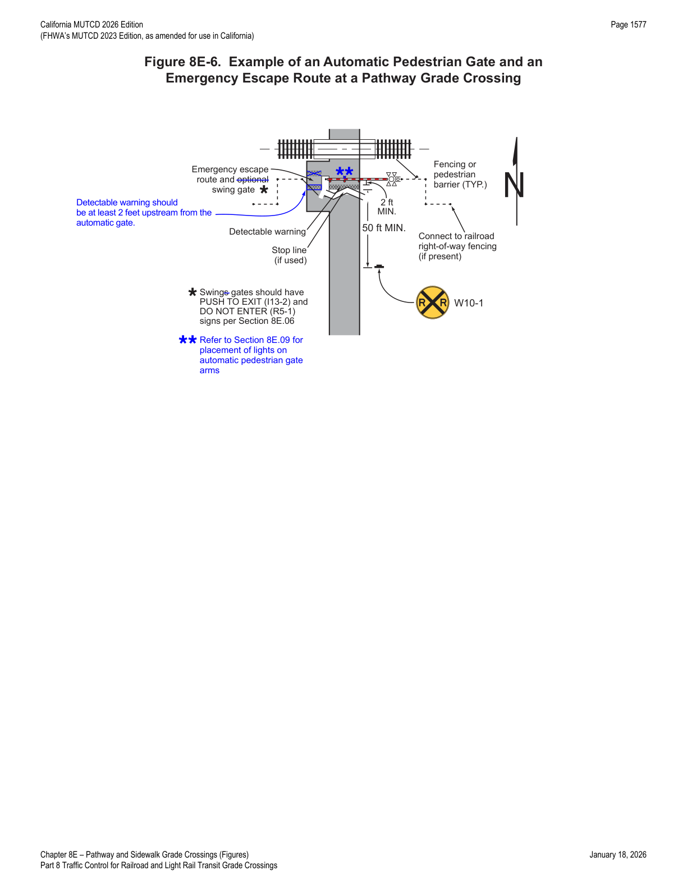
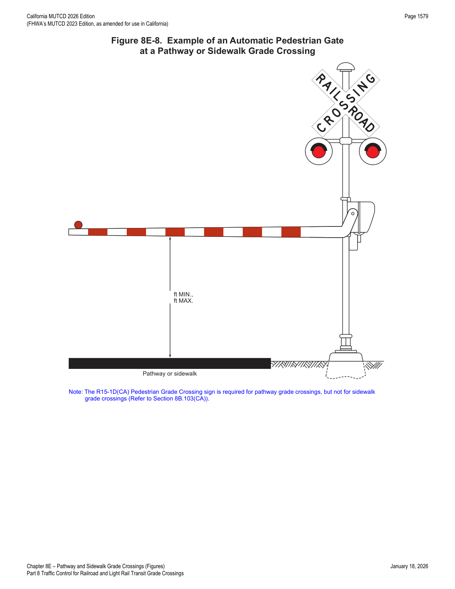
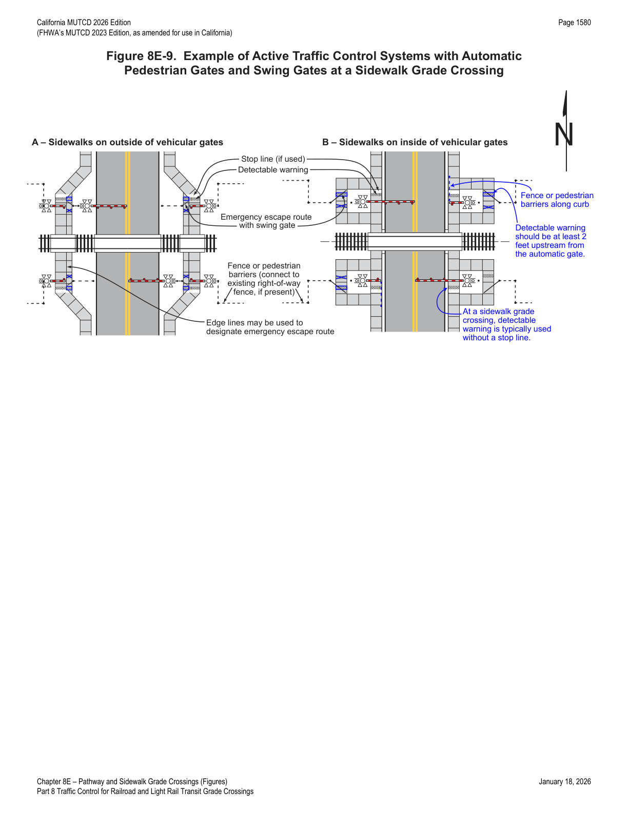
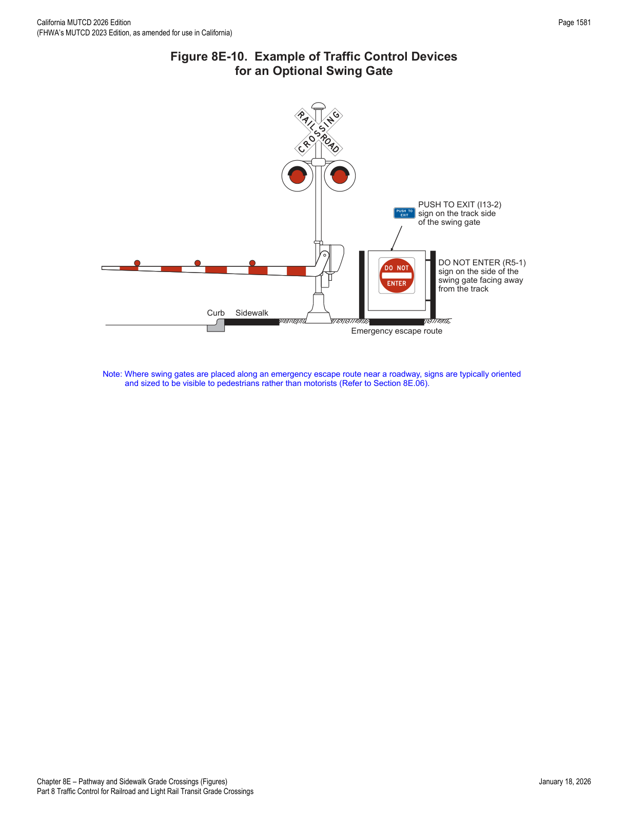
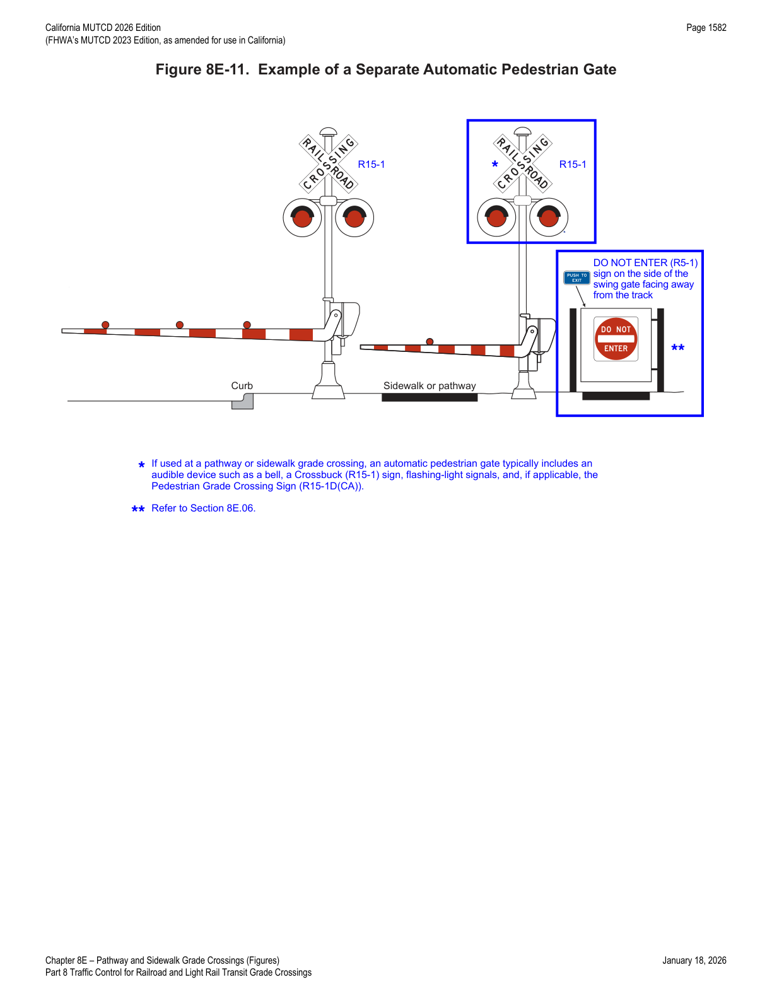
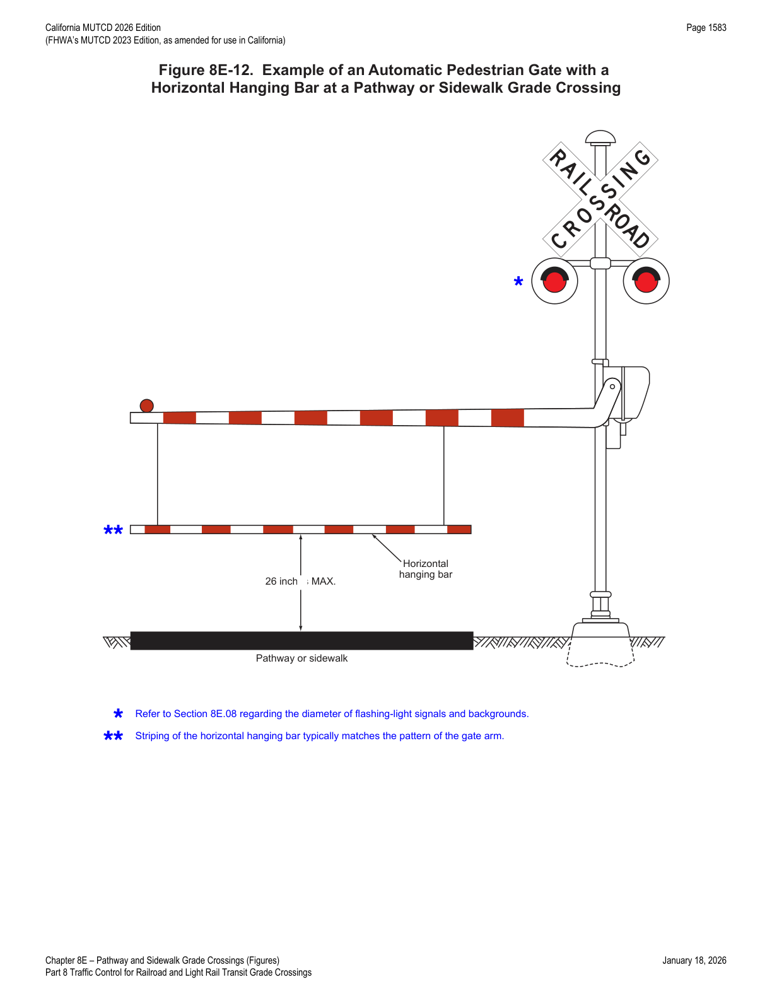
8E.10Active Traffic Control Devices — Multiple-Track Pathway or Sidewalk Grade Crossings
- 01Where railroad or LRT tracks are immediately adjacent to other tracks, the traffic control devices that control pedestrian movements should be designed to avoid having pedestrians wait between sets of tracks.
In practice, this is the multiple-track counterpart to Section 8A.08's adjacent-grade-crossing provisions and Section 8E.04's 30-foot refuge-area threshold — where two tracks are close together, the whole point of the pedestrian refuge area and detectable warning layout in Figure 8E-4 is to avoid stranding a pedestrian between the rails of two different tracks when a second train arrives.
★ Key Takeaways — Chapter 8E
- A pathway crossing sits in its own right-of-way, independent of any roadway; a sidewalk runs within the highway right-of-way close enough that roadway grade-crossing devices can influence sidewalk users — this distinction (Figure 8E-1) drives which provisions of this chapter apply.
- Detectable warnings (Chapter 3C) are mandatory at every pathway crossing open to pedestrians and every sidewalk crossing, spanning the full width, generally at least 2 ft deep in the direction of travel, placed at least 2 ft upstream of the gate/signal/Crossbuck and at least 12 ft from the nearest rail (as little as 6 ft at LRT crossings).
- A Crossbuck Assembly is mandatory whenever the crossing is more than 25 ft from the center of the nearest warning device; mounting heights are 4 ft (offset ≥2 ft) or 7 ft (offset <2 ft) for the YIELD/STOP sign, with a 0 ft minimum lateral offset for sidewalks versus 2 ft for pathways.
- Active control is mandatory above 25 mph LRT speed (semi-exclusive alignment) and must include automatic gates above 35 mph; a full automatic pedestrian gate/escape-route/fencing system is mandatory wherever train speeds reach 80 mph or higher, absent a Diagnostic Team/CPUC exception.
- Pedestrian signal heads (Upraised Hand/Walking Person) are barred at pathway/sidewalk grade crossings where rail traffic doesn't stop — horizontally-aligned alternately-flashing red lights are used instead, now specified at 12-inch minimum lens diameter with 30-inch spacing and 24-inch backgrounds.
- Swing gates, fencing, and maze/pedestrian barriers channelize users into and out of the crossing and along emergency escape routes, with PUSH TO EXIT (I13-2) and DO NOT ENTER (R5-1) signs marking the track-side and away-from-track faces of each swing gate.